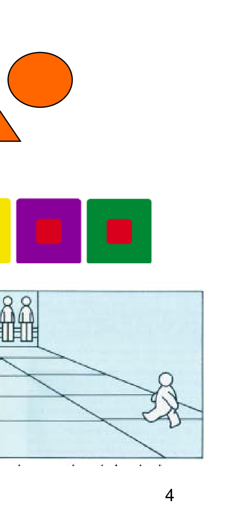
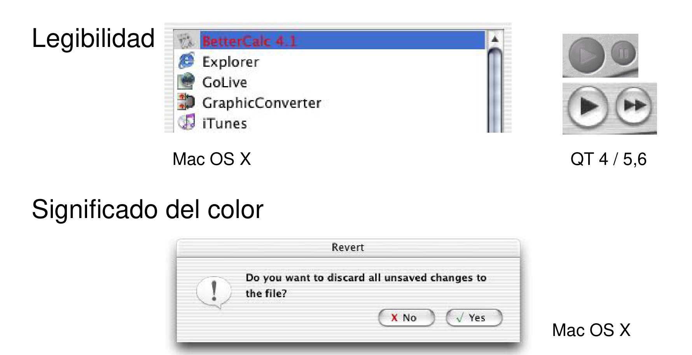
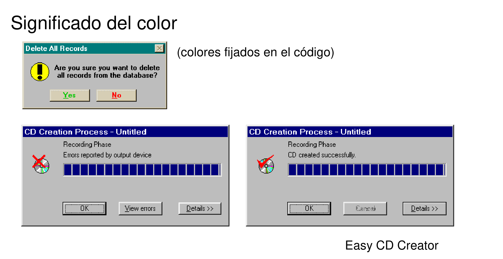
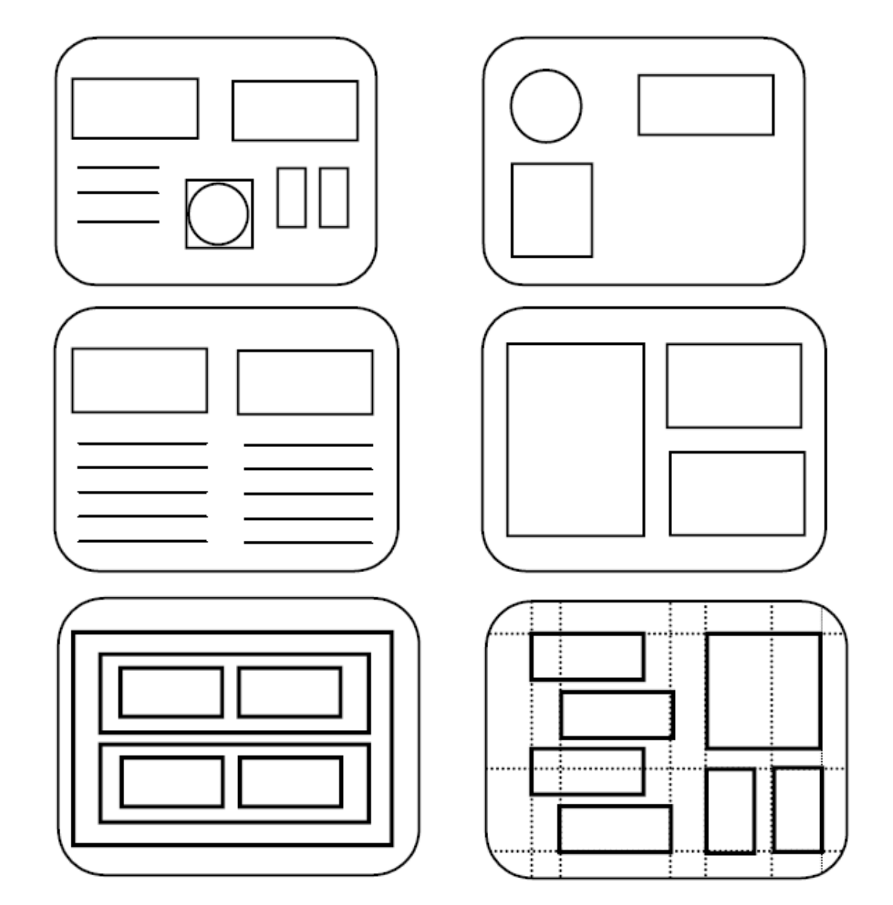
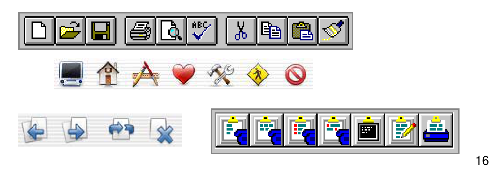

Diseño gráfico. Principios, estándares y guías
Temas de IPO · 5/8
- 1. Introducción a la IPO
- 2. El factor humano
- 3. Prototipado y evaluación
- 4. Diseño centrado en el usuario
- 5. Diseño gráfico. Principios, estándares y guías
- 6. Accesibilidad
- 7. Estilos y paradigmas de interacción
- Notas sobre examen
5.1 Elementos de la imagen
Una imagen se puede ver como una composición de elementos grafo-morfológicos (puntos, líneas, formas, colores...) organizada según normas basadas en los principios de la percepción humana (ver tema 2).
El principio de simplicidad estructural busca aumentar la eficacia de la imagen mediante tres cosas: la pregnancia de la forma (que se perciba con claridad, a la primera), la composición plástica (cómo se reparten los elementos) y la correspondencia entre forma y contenido (que lo que se ve encaje con lo que significa).
Los elementos básicos de una imagen son los puntos y líneas, que forman figuras; la iluminación y el color, y la composición (tamaño y formato).

Formas (cuadrado, círculo, triángulo), un mismo cuadrado rojo sobre fondos de distinto color (el fondo cambia cómo se percibe) y una composición con perspectiva.5.2 El uso del color
5.2.1 Simplicidad, consistencia y claridad
El color debe usarse con simplicidad y consistencia: vincular significados prácticos e intuitivos a los colores primarios (rojo, verde, amarillo y azul), que son fáciles de aprender y recordar; usar pocos colores, 5 ± 2, y no sobrecargar un color con más de un significado: conceptos diferentes, colores diferentes.
También debe aportar claridad: si el usuario conoce de antemano el color de una información, la encuentra antes; conviene usar colores estandarizados. Bien usado, el color mejora la estética y el atractivo de la interfaz, y también la efectividad del procesamiento de la información y el rendimiento de la memoria. La usabilidad mejora al agrupar con colores la información relacionada y al usar códigos de color en los mensajes (rojo para errores, por ejemplo).
Analogía: el semáforo y el metro
En un semáforo cada color significa una sola cosa, y siempre la misma: por eso nadie duda. En un plano de metro, cada línea tiene su color y basta con 5-10. Si una misma línea cambiara de color en cada estación, o si usaran 30 tonos parecidos, el plano sería inútil.
5.2.2 El lenguaje del color
Combinar colores con buenos resultados requiere técnica. Una mala combinación de fondo y primer plano crea ilusiones ópticas que fuerzan la vista; usar muchos colores puros o muy saturados obliga al ojo a reenfocar constantemente y causa fatiga, y usar colores difíciles de enfocar (como el azul) en texto o líneas finas produce fatiga y estrés.

Arriba, legibilidad: el elemento seleccionado se resalta con un fondo de color que mantiene el texto legible, y los botones de reproducción de QuickTime usan un único color neutro. Abajo, significado del color: en el diálogo "Revert" el botón "No" lleva una X roja y "Yes" una marca verde.
Ejemplos del "Interface Hall of Shame": colores fijados en el código que no siguen el sistema (botones Yes/No en amarillo y rojo) y un proceso de grabación de CD que muestra la misma barra azul y casi el mismo icono tanto si ha habido errores como si ha terminado bien.La web del *Interface Hall of Shame* que enlaza la diapositiva (hallofshame.gp.co.at) ya no responde.
Para entenderlo mejor
Color en las interfaces (curso de diseño UI) — cómo elegir y usar colores con significado en una interfaz (vídeo, 11:30).
5.3 Técnicas de diseño gráfico e iconos
5.3.1 Técnicas de diseño gráfico
- Disposición: cómo se colocan los elementos en la pantalla; permite dar más importancia a unos que a otros. El orden de lectura importa y depende de la cultura (izquierda a derecha, derecha a izquierda...).
- Énfasis: los elementos realzados se ven antes y se perciben más importantes. Si todo tiene el mismo peso, la composición es aburrida y la navegación difícil. Se consigue con la posición, el color y los atributos del texto (tamaño, negrita).
- Foco: el centro de atención, el punto que se ve primero; sirve para dirigir al usuario a la información que interesa.
- Alineación: aporta equilibrio, armonía, unidad y modularidad. Una alineación exacta y consistente es la forma más fácil de mejorar la estética de una interfaz.

Distintas formas de disponer los mismos bloques en una pantalla; la última muestra la rejilla (líneas discontinuas) a la que se alinean los elementos.Para entenderlo mejor
Jerarquía visual: qué es y cómo usarla — énfasis, foco y orden de lectura aplicados a un diseño (vídeo, 7:20).
5.3.2 Recomendaciones de diseño
- Facilitar la visibilidad: centrarse en el contenido.
- Usar diálogos simples y naturales, con lenguaje cercano a los usuarios.
- Reducir el esfuerzo cognitivo (memorización) haciendo visible toda la información: evitar desplazamientos (scroll).
- Reducir la complejidad de las acciones: predicción y realimentación.
- Marcar con claridad las opciones de navegación y ofrecer atajos.
- Agrupar los datos lógicamente, jerarquizar la información y mostrar solo la necesaria.
- Flexibilizar la presentación: permitir personalizarla.
- Diseñar con una "imagen global": estructura gráfica y de navegación común a todas las pantallas, con elementos comunes (por ejemplo, los iconos).
5.3.3 Iconos
Los iconos se usan desde la primera interfaz gráfica (Xerox Star) y son útiles por dos motivos: las personas reaccionan instintivamente a las imágenes, y son pequeños, algo importante en una pantalla de espacio limitado. Representan tanto objetos como funciones.
Su significado depende de tres factores: el contexto (el entorno donde se usa), la función (el tipo de tarea) y la forma representativa, que puede ser un objeto concreto, un objeto abstracto o una combinación de ambos, que da los iconos más comprensibles.
Señales de tráfico y de aviso: (a) desprendimientos, (b) restaurante (cuchillo y tenedor), (c) bar (copa) y (d) riesgo biológico, de lo más concreto a lo más abstracto.
Tras elegir qué objeto representar hay que decidir cómo dibujarlo (simple o detallado) y crear un "lenguaje icónico": una forma coherente de representar distintas acciones sobre un mismo elemento (por ejemplo, el mismo documento con un lápiz para editar, con una flecha para enviar...). Los sistemas complejos tienen un lenguaje icónico simple y consistente.

Abajo a la derecha, una familia de iconos que comparten el mismo documento base y solo cambian en el detalle que indica la acción.5.4 Principios y directrices
5.4.1 Principios de diseño
Un principio es una afirmación muy general, normalmente basada en investigaciones sobre cómo aprenden y trabajan las personas. Son de alto nivel y sirven para alcanzar ciertos objetivos (por ejemplo, minimizar el trabajo del usuario) y para organizar el diseño, pero no dicen cómo conseguirlos, lo que limita su uso práctico.
Distintos autores han propuesto sus listas:
| Autor | Principios |
|---|---|
| Simpson (1985) | Definir los usuarios; dejarles el control; minimizar su trabajo; programas sencillos; consistencia; realimentación; no cargar la memoria de trabajo; no abusar de la memoria a largo plazo |
| Preece (1994) | Estudiar la población de usuarios; reducir la carga cognitiva; aplicar técnicas de ingeniería contra el error humano; consistencia y claridad |
| Dix (1998) | Facilidad de aprendizaje; flexibilidad; robustez |
Mandel (1997) los organiza en tres reglas de oro:
- Dar el control al usuario: permitir teclado y ratón, que el usuario cambie de foco de atención, mostrar mensajes y textos descriptivos, ofrecer acciones inmediatas, reversibles y con realimentación, permitir personalizar la interfaz y manipular sus objetos, y adaptarse a distintos niveles de habilidad.
- Reducir la carga de memoria: dar pistas visuales, opciones por defecto y atajos, usar metáforas del mundo real, aplicar la revelación progresiva (mostrar las opciones avanzadas solo cuando hacen falta, para no abrumar) y buscar claridad visual.
- Hacer la interfaz consistente.
IBM (2001) propone once:
| Principio | Significado |
|---|---|
| Simplicidad | No sacrificar la usabilidad por la funcionalidad |
| Apoyo | Dar al usuario el control del sistema |
| Familiaridad | Diseñar según lo que el usuario ya sabe |
| Evidencia | Objetos y controles visibles e intuitivos |
| Estímulo | Acciones previsibles y reversibles |
| Satisfacción | Crear sensación de progreso y logro |
| Disponibilidad | Todos los objetos disponibles en cualquier orden y momento |
| Seguridad | Evitar errores con distintos tipos de ayuda |
| Versatilidad | Soportar varias técnicas de interacción para que el usuario elija la mejor para su situación |
| Personalización | Permitir adaptar la interfaz a sus necesidades |
| Afinidad | Objetos gráficos parecidos a los de la vida real |
Fíjate en que todas las listas repiten las mismas ideas de fondo: control del usuario, consistencia, realimentación, poca carga de memoria y prevención de errores (las mismas que las heurísticas de Nielsen y las reglas de Shneiderman del tema 3).
5.4.2 Directrices
Las directrices recomiendan acciones concretas basadas en los principios. Son más específicas y requieren menos experiencia para interpretarlas; los especialistas en IPO las concretan a partir de los principios para usuarios, entornos y tecnologías distintos. Permiten asegurar la consistencia dentro de un sistema o una familia de sistemas, algo fundamental para las empresas de software. Ejemplo: no poner botones de cerrar en los diálogos modales (obliga al usuario a elegir una respuesta).
Analogía: principio, directriz y estándar
Un principio es "conduce con seguridad" (general, no dice cómo). Una directriz es "guarda dos segundos de distancia con el coche de delante" (concreta y fácil de aplicar). Un estándar es el código de circulación aprobado por ley (obligatorio y acordado oficialmente).
5.5 Estándares
Un estándar es un requisito, regla o recomendación basada en principios probados y en la práctica, que representa el acuerdo de un grupo de profesionales oficialmente autorizados a nivel local, nacional o internacional. Su objetivo es conseguir software más fácil y seguro, fijando requisitos mínimos y eliminando inconsistencias y variaciones innecesarias entre interfaces. Sus beneficios son una terminología común, facilidad de mantenimiento y evolución, una identidad común y menos formación necesaria.
| Estándares de iure | Estándares de facto | |
|---|---|---|
| Origen | Comités con estatus legal, con apoyo de un gobierno o institución | Productos de éxito en el mercado o desarrollos universitarios muy difundidos |
| Por qué son estándar | Se aprueban mediante un proceso formal: documento preliminar público → enmiendas → aprobación | Se aceptan por su uso generalizado |
| Dónde se definen | En el documento oficial del organismo | En manuales, libros o artículos |
| Ejemplos | Normas ISO | X-Window, lenguaje C, normas CUA |
Estándares de iure importantes en IPO:
| Norma | Tema |
|---|---|
| ISO/IEC 9126 | Evaluación de productos software: características de calidad y directrices |
| ISO 9241 | Requisitos ergonómicos para trabajar con terminales de presentación visual (VDT) |
| ISO/IEC 10741 | Interacción de diálogos |
| ISO/IEC 11581 | Símbolos y funciones de los iconos |
| ISO 11064 | Diseño ergonómico de centros de control |
| ISO 13406 | Requisitos ergonómicos de las pantallas planas |
| ISO 13407 | Procesos de diseño centrados en la persona para sistemas interactivos |
| ISO 14915 | Requisitos de las interfaces multimedia |
| ISO/IEC 18019 | Diseño y preparación de documentación |
5.6 Guías de estilo
5.6.1 Qué son
Para asegurar la consistencia entre las partes de un sistema o una familia de sistemas, los desarrolladores deben basar sus diseños en un conjunto de principios y directrices. Las organizaciones suelen tener guías que siguen sus desarrolladores, llamadas guías de estilo, con objetivos muy variados. Su ventaja es que mejoran la usabilidad gracias a la consistencia que imponen. En la industria se las llama el "look and feel" (el aspecto y el comportamiento).
Las publican fabricantes de software y hardware y suelen ser estándares de facto: Apple, Motif, OS/2, Windows, Open Look, CDE (Common Desktop Environment), KDE, Java Swing... (Motif, OS/2 y Windows siguen las normas CUA). Contienen directrices muy concretas, de muy bajo nivel.
Para entenderlo mejor
Las guías actuales de los dos grandes fabricantes (las de las diapositivas redirigen a ellas): Apple Human Interface Guidelines y Windows app design (Microsoft) (webs, inglés).
Las diapositivas enlazan las guías antiguas de Windows (MSDN), de Mac y de iPhone, que hoy redirigen a las de arriba, y un repositorio de guías de experiencedynamics.com que ya no existe.
5.6.2 Guías de estilo en la web
En la web no hay una guía de estilo propia: se pone más énfasis en el impacto que en la consistencia. La metáfora de la interfaz es la página: el usuario interactúa con ella y navega de página en página. Una referencia es la Web Style Guide.
5.6.3 Guías de estilo corporativas
Ayudan a una organización a dar el mismo estilo a todos sus productos. Para crear la suya, una organización parte de una guía de estilo comercial y le añade características propias que den una imagen coherente de la organización. Un ejemplo es la guía de imagen web de la USC.
El enlace a la guía de la USC de las diapositivas ya no está disponible.
5.6.4 Consideraciones
Los estándares y guías son una base para el diseño, pero no garantizan que la interfaz sea usable. Aun así, es mejor seguirlas que no hacerlo: se puede llegar a un buen diseño sin ellas, pero aportan más ventajas que inconvenientes. Para que se apliquen de verdad conviene facilitárselo a diseñadores y programadores: dar ejemplos en la documentación, incorporar las guías a las herramientas y ofrecer formación.
5.7 Ideas clave
- Imagen = elementos (puntos, líneas, formas, color, composición) organizados según la percepción. Simplicidad estructural: pregnancia, composición plástica, correspondencia forma-contenido.
- Color: significados intuitivos para rojo, verde, amarillo y azul; 5 ± 2 colores; un concepto, un color; colores estandarizados; agrupar y codificar mensajes. Evitar fondos/primer plano que fuerzan la vista, colores saturados y colores difíciles de enfocar en texto fino.
- Técnicas: disposición (orden de lectura según cultura), énfasis, foco, alineación (la forma más fácil de mejorar la estética). 8 recomendaciones (visibilidad, lenguaje natural, menos memoria, realimentación, navegación clara, agrupar, personalizar, imagen global).
- Iconos (desde Xerox Star): significado según contexto, función y forma (concreta, abstracta o combinada); lenguaje icónico simple y consistente.
- Principios (generales, no dicen cómo): Simpson, Preece, Dix, Mandel (control, menos memoria, consistencia), IBM (11). Directrices: más concretas (no poner "cerrar" en un diálogo modal).
- Estándares: de iure (comités oficiales, normas ISO: 9241, 13407, 11581...) y de facto (X-Window, C, CUA).
- Guías de estilo ("look and feel"): de fabricantes (Apple, Windows, KDE...), web (la página como metáfora) y corporativas. No garantizan la usabilidad, pero es mejor seguirlas.